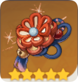

| Rareté | Bonus 2 pièces | Bonus 4 pièces | |
| 4-5 ⭐ | Confère un bonus de DGT Géo de 15%. | Lorsque vous obtenez un cristal issu d'une réaction avec l'élément Géo, tous les personnages de l'équipe reçoivent un bonus de DGT du second élément de 35% pendant 10s. Cet effet ne peut s'appliquer qu'a un élément à la fois. | |
|  | 4-5 ⭐ | Renforce le bouclier de 35%. | Les attaques normales et chargées infligent un bonus de 40% de DGT lorsque le personnage est sous la protection d'un bouclier. |
| Rareté | Bonus 2 pièces | Bonus 4 pièces | |
| 3-4 ⭐ | Augmente les DGT infligés par les compétences élémentaires de 20%. | Après la défaite d'un ennemi, le TdR de compétence élémentaire a 100% de chance d'être réinitialisé. Cet effet peut être déclenché une fois toutes les 15s. | |
| 3-4 ⭐ | Augmente la recharge d'énergie de 20%. | Le déchaînement élémentaire restaure 2 pts d'énergie élémentaire aux autres personnages de l'équipe toutes les 2s pendant 6s. Cet effet est non cumulable. |